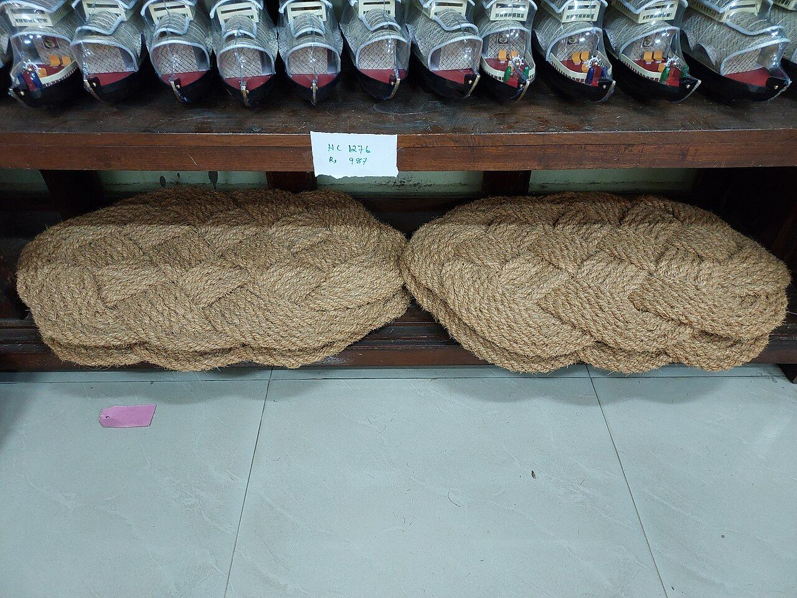
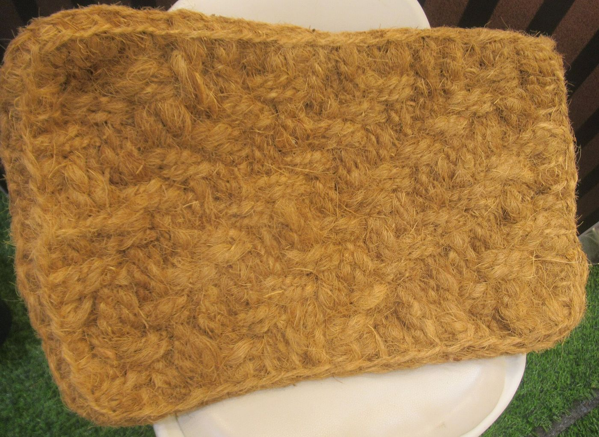
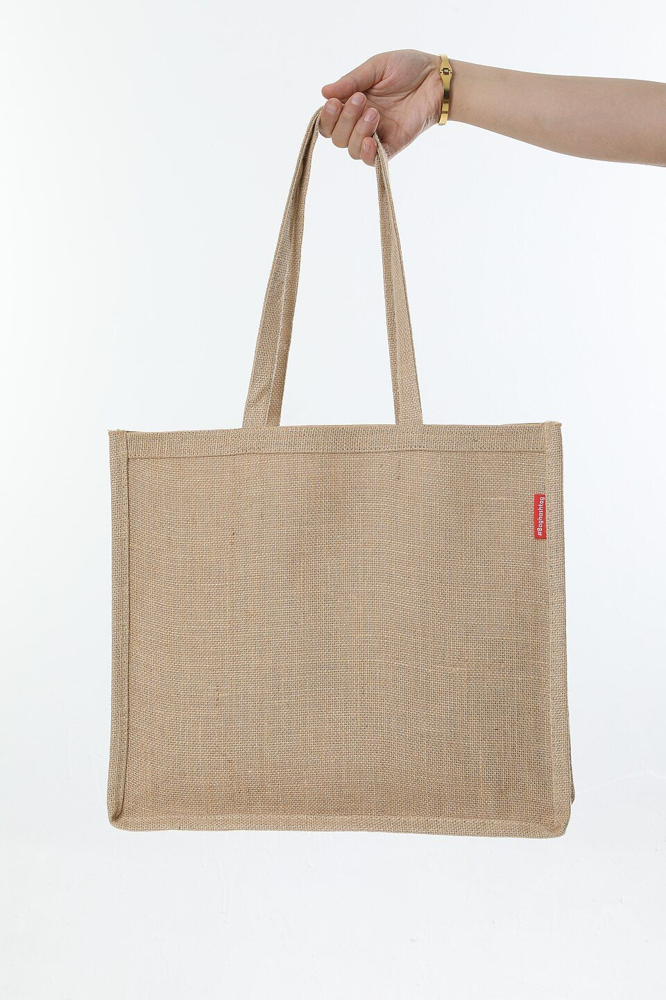
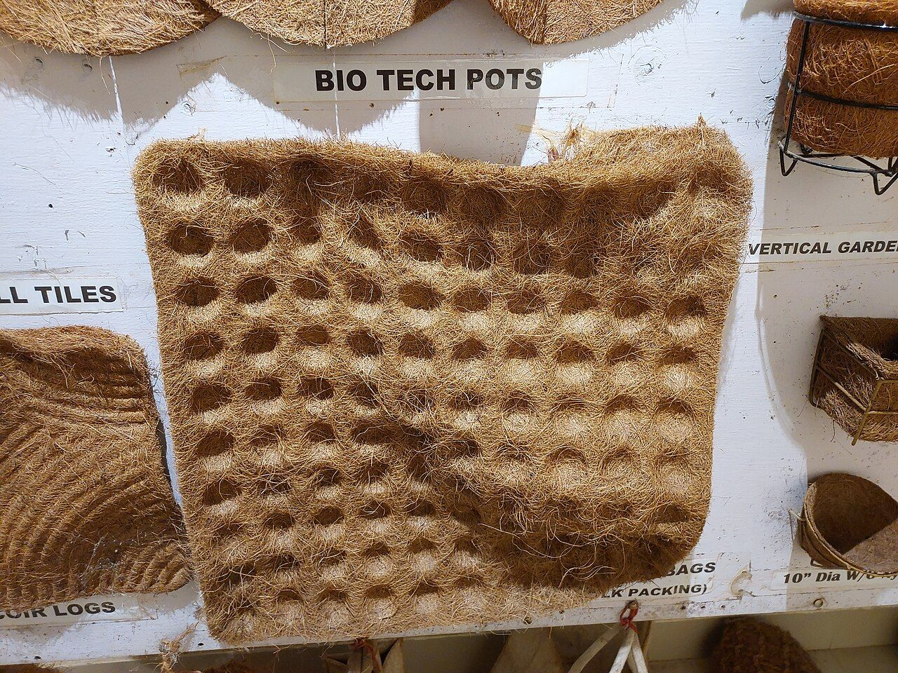
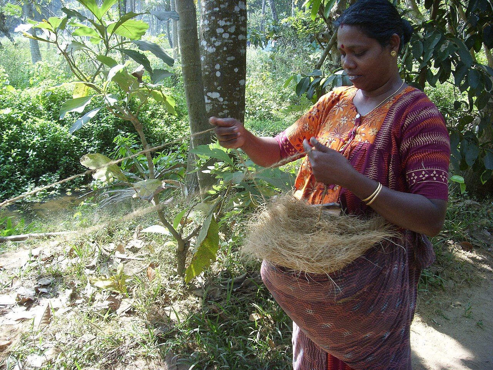

Home & entry
Coir entrance mats
Textured natural-fibre mats for doorways, thresholds and everyday use.
View home products →Shop handcrafted coconut coir door mats, golden jute area rugs, reusable tote bags, and organic gardening supplies. 100% plastic-free, plant-based products made for welcoming homes and greener gardens.

Coir and jute perform differently because their plant biology is fundamentally distinct. Choose by environment and mechanical demands.
Thick, resilient fiber extracted from the fibrous outer husk of the coconut. Exceptionally high in lignin content.
Soft, lustrous plant fiber spun into fine or heavy yarns. Cellulose-rich with silky natural luster and pliable drape.
From a durable doorstep welcome to a landscape restoration project, start with the intended use and compare the right material and format.

Textured natural-fibre mats for doorways, thresholds and everyday use.
View home products →
Simple woven forms for shopping, storage and relaxed interiors.
Explore jute range →
Grow bags, coir formats and geo-textile options for outdoor applications.
Explore applications →
We organise product information around fibre composition, dimensions, weave, finish, care and intended application.
Home entrance, garden, packaging or civil engineering.
Look for SKU-specific dimensions and technical data where available.
Discuss custom sizes, samples and wholesale requirements.
Tested natural fiber profiles that deliver physical endurance without persisting in landfill or oceans.
Pure vegetable fibers that never shed synthetic particles into waterways.
High lignin content provides innate microbial and decay resistance in coir.
Fast-cycling monsoon bast crop that replenishes without deforestation.
Gradually enriches soil carbon as natural humus at end of service life.
Whether for entrance architecture, commercial horticulture, or municipal groundwork, each format is sized and woven for its target use.
Heavy scraping coir door mats and handloom jute runners designed for high pedestrian throughput with non-slip backing.
High-porosity cocopeat slabs, coir grow cubes, and weed-prevention mulching discs that preserve root moisture.
High-tensile coir geotextiles and bio-logs deployed on highway cuttings, riverbanks, and coastal slopes to prevent soil erosion.